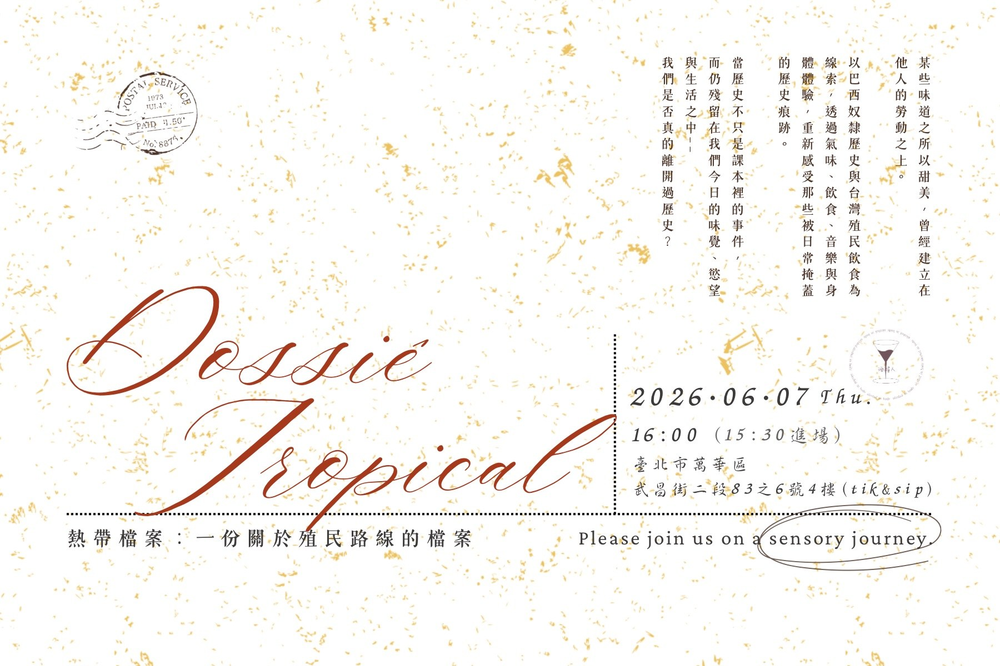
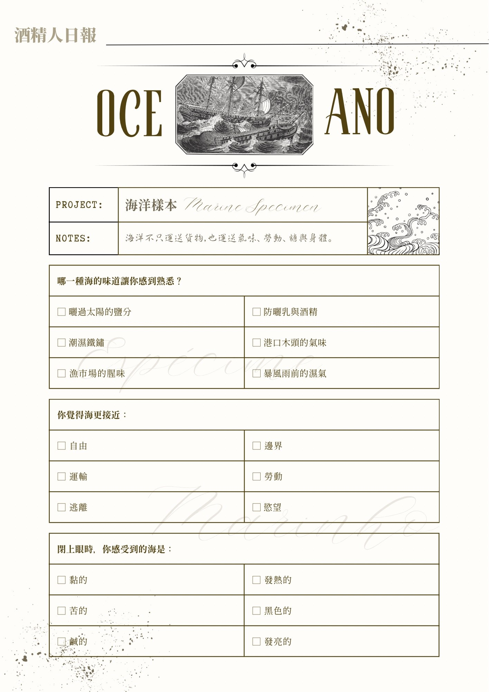
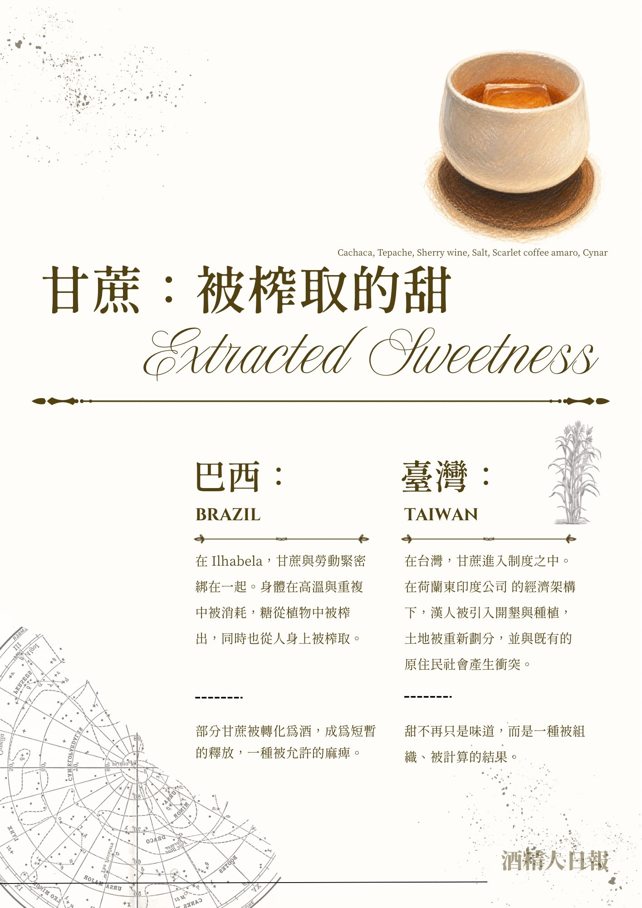

熱帶檔案
Tropic Dossier
以復古檔案、報章紙感、地圖、郵票與中英葡文字排版，將活動方提供的歷史與感官敘事整理成展演視覺。
Archive-inspired exhibition graphics built from supplied event text, using maps, stamps, paper texture, and multilingual editorial layout.
Scope邀卡設計、主視覺排版、系列圖文版面
Role視覺方向、排版、文字層級、素材整合
ToolsCanva / Inkscape print check / visual material integration


